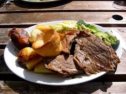

Sunday Roast
Home

Description
Lasagna is a classisc Italian dish made up of layers of pasta, meat, cheese, and sauce, baked together to create a rich, comforting meal. Traditionally, it consists of wide, flat sheets of pasta layered with fillings such as ground beef, pork, or a mix of the two, along with a savory tomato-based marinara sauce. In addition to the meat sauce, a creamy béchamel or ricotta cheese mixture is often included to add richness and flavor.
Ingredients
- Ground beef (1 lb) – or a mix of ground beef and pork
- Olive oil (1-2 tablespoons)
- Onion (1 medium, chopped)
- Garlic (2-3 cloves, minced)
- Tomato sauce (2 cups)
- Tomato paste (1 tablespoon)
- Crushed tomatoes (1 can, 14.5 oz)
- Dried oregano (1 teaspoon)
- Dried basil (1 teaspoon)
- Salt and pepper to taste
- Red wine (optional, 1/4 cup, for depth of flavor)
- Sugar (1 teaspoon, optional, to balance acidity)
- Pasta sheets
Steps
- Heat 1-2 tablespoons of olive oil in a large skillet or pan over medium heat.
Add 1 lb of ground beef (or a mixture of beef and pork). Break it apart with a spoon or spatula as it cooks.
Season with salt and pepper, and cook until browned and no longer pink, about 7-10 minutes.
- Add 1 medium chopped onion and cook until softened, about 5 minutes.
Stir in 2-3 minced garlic cloves and cook for another minute until fragrant.
- Stir in 2 cups of tomato sauce, 1 tablespoon of tomato paste, and 1 can (14.5 oz) of crushed tomatoes.
Add 1 teaspoon each of dried oregano and dried basil.
If desired, pour in 1/4 cup of red wine for extra depth of flavor and let it simmer for 2-3 minutes.
Simmer the sauce on low heat for 20-30 minutes, stirring occasionally. Taste and adjust seasoning with salt, pepper, and 1 teaspoon of sugar (optional) if needed.
- In a medium bowl, combine:
15 oz of ricotta cheese
2 cups of shredded mozzarella cheese
1/2 cup of grated Parmesan cheese
1 large egg (to help bind the mixture)
2 tablespoons of fresh chopped parsley (optional)
Salt and pepper to taste
Mix until fully combined. Set aside.